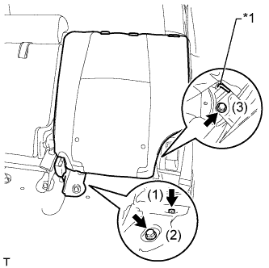

ЗАМОК РЕМНЯ БЕЗОПАСНОСТИ ЗАДНЕГО СИДЕНЬЯ № 1 В СБОРЕ (для моделей с сиденьем раздельного типа 60/40 с двойным складыванием с левой стороны) > УСТАНОВКА |
| 1. УСТАНОВИТЕ ЗАМОК РЕМНЯ БЕЗОПАСНОСТИ ЛЕВОГО ЗАДНЕГО СИДЕНЬЯ № 1 В СБОРЕ |
Установите замок ремня безопасности и закрепите его болтом.
| 2. УСТАНОВИТЕ СПИНКУ ЛЕВОГО ЗАДНЕГО СИДЕНЬЯ В СБОРЕ |
|  |
Сложите спинку сиденья, установите жгут установки положения спинки сиденья на петлю, а затем временно вверните болт в петлю.
| *1 | Жгут установки положения |
Верните спинку сиденья в вертикальное положение и временно закрепите ее 2 болтами.
Затягивайте болты в порядке, указанном на рисунке.
| 3. УСТАНОВИТЕ ПАНЕЛЬ ПОКРЫТИЯ СПИНКИ ЛЕВОГО ЗАДНЕГО СИДЕНЬЯ В СБОРЕ |
Введите в зацепление 4 захвата и 5 фиксаторов, чтобы закрепить панель покрытия.
| 4. УСТАНОВИТЕ ОБИВКУ СПИНКИ ЗАДНЕГО СИДЕНЬЯ |
Введите в зацепление 4 захвата, чтобы закрепить обивку.
Верните спинку сиденья в вертикальное положение и зафиксируйте ее.
| 5. УСТАНОВИТЕ ПОДГОЛОВНИК ЗАДНЕГО СИДЕНЬЯ В СБОРЕ |
Установите подголовник заднего сиденья в сборе (Нажмите здесь).
Установите подушку сиденья в исходное положение.